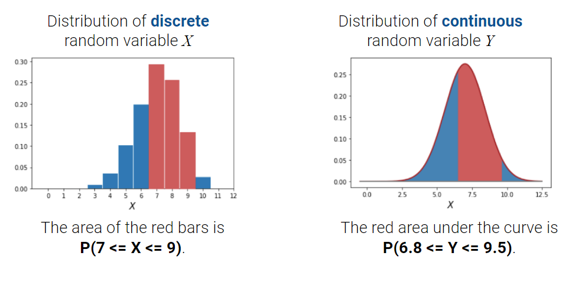
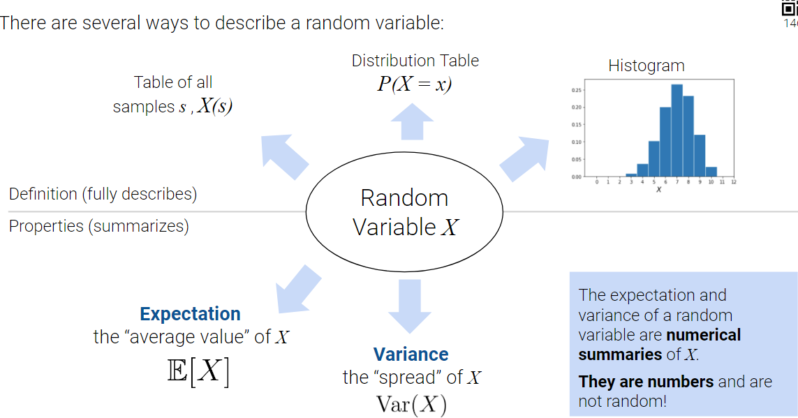
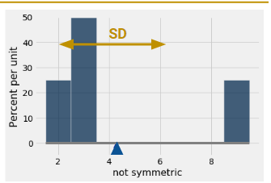

Code
import numpy as np
import pandas as pd
# Our random variable X
dist_df = pd.DataFrame({"x": [3, 4, 6, 8],
"P(X = x)": [0.1, 0.2, 0.4, 0.3]})
dist_df
| x | P(X = x) | |
|---|---|---|
| 0 | 3 | 0.1 |
| 1 | 4 | 0.2 |
| 2 | 6 | 0.4 |
| 3 | 8 | 0.3 |
In the past few lectures, we’ve examined the role of complexity in influencing model performance. We’ve considered model complexity in the context of a tradeoff between two competing factors: model variance and training error.
Thus far, our analysis has been mostly qualitative. We’ve acknowledged that our choice of model complexity needs to strike a balance between model variance and training error, but we haven’t yet discussed why exactly this tradeoff exists.
To better understand the origin of this tradeoff, we will need to introduce the language of random variables. The next two lectures of probability will be a brief digression from our work on modeling so we can build up the concepts needed to understand this so-called bias-variance tradeoff. Our roadmap for the next few lectures will be:
Let’s get to it.
Suppose we generate a set of random data, like a random sample from some population. A random variable is a numerical function of the randomness in the data. It is random from the randomness of the sample; it is variable because its exact value depends on how this random sample came out.
To give a concrete example: say we draw a random sample \(s\) of size 3 from all students enrolled in Data 100. We might then define the random variable \(X\) to be the number of Data Science majors in this sample.

The distribution of a random variable \(X\) describes how the total probability of 100% is split over all possible values that \(X\) could take.
If \(X\) is a discrete random variable with a finite number of possible values, define its distribution by stating the probability of \(X\) taking on some specific value, \(x\), for all possible values of \(x\).

The distribution of a discrete variable can also be represented using a histogram. If a variable is continuous – it can take on infinitely many values – we can illustrate its distribution using a density curve.

Random variables are defined by parameters. These are numbers that determine the distribution of our random variable. Distributions can have any number of parameters that describe them. Examples of parameters: \(\mu\) describes the mean for normal distributions, \(n\) describes the number of samples for a Binomial distribution, etc.
In many cases, if we are given a random variable we want can use code to create simulations of the random variable. To do so, we randomly pick values of \(X\) according to its distribution.
numpy.random.choiceDataFrame.sampleWe also have preprogrammed functions for drawing from common distributions.
Binomial: numpy.random.binomialUniform: numpy.random.uniformNormal: numpy.random.normalimport numpy as np
import pandas as pd
# Our random variable X
dist_df = pd.DataFrame({"x": [3, 4, 6, 8],
"P(X = x)": [0.1, 0.2, 0.4, 0.3]})
dist_df
| x | P(X = x) | |
|---|---|---|
| 0 | 3 | 0.1 |
| 1 | 4 | 0.2 |
| 2 | 6 | 0.4 |
| 3 | 8 | 0.3 |
np.random.seed(42)
def simulate_samples(df, xname="x", pname="P(X = x)", size=1):
return np.random.choice(
df[xname], # draw from these choiecs
size=size, # this many times
p=df[pname]) # according to this distribution
N = 80000
all_samples = simulate_samples(dist_df, size=N)
sim_df = pd.DataFrame({"X(s)": all_samples})
sim_df.head()| X(s) | |
|---|---|
| 0 | 6 |
| 1 | 8 |
| 2 | 8 |
| 3 | 6 |
| 4 | 4 |
#generate a sample from our full data. Note how it's in a DataFrame
np.random.seed(42)
x_0 = sim_df.sample()
x_0| X(s) | |
|---|---|
| 47044 | 8 |
#alternative for when given the distribution
np.random.seed(42)
x_1 = np.random.choice(dist_df['x'],p=dist_df['P(X = x)'])
print("single draw from dist_df: ",x_1)single draw from dist_df: 6#generate draws from common distributions
np.random.seed(42)
x_2 = np.random.binomial(n = 3,p = 0.5)
print("single draw of number of heads in 3 coin flips:", x_2)single draw of number of heads in 3 coin flips: 1Often, it is easier to describe a random variable using some numerical summary, rather than fully defining its distribution. These numerical summaries are numbers that characterize some properties of the random variable. Because they give a “summary” of how the variable tends to behave, they are not random – think of them as a static number that describes a certain property of the random variable. In Data 100, we will focus our attention on the expectation and variance of a random variable.

The mean or expectation of a random variable can be visually seen as the center of gravity or balance point of the histogram.
The variance is a measure of spread. It is the expected squared deviation from the mean.
Visually, these can be sanity checked by printing the histogram as so:

The expectation of a random variable \(X\) is the weighted average of the values of \(X\), where the weights are the probabilities of each value occurring. To compute the expectation, we find each value \(x\) that the variable could possibly take, weight by the probability of the variable taking on each specific value, and sum across all possible values of \(x\).
\[\mathbb{E}[X] = \sum_{\text{all possible } x} x P(X=x)\]
Consider the random variable \(X\) we defined earlier. Note that the expectation can be a value that is not attainable in one draw of X!
\[E[X] = 3(0.1) + 4(0.2) + 6(0.4) + 8(0.3) = 5.9\]
Expectation is a number, not a random variable! - It is analogous to the average (same units as the random variable). - It is the center of gravity of the probability histogram. - It is the long run average of the random variable, if you simulate the variable many times.
The variance of a random variable is a measure of its chance error. It is defined as the expected squared deviation from the expectation of \(X\). Put more simply, variance asks: how far does \(X\) typically vary from its average value? What is the spread of \(X\)’s distribution?
\[\text{Var}(X) = \mathbb{E}[(X-\mathbb{E}[X])^2]\]
If we expand the square and use properties of expectation, we can re-express this statement as the computational formula for variance. This form is often more convenient to use when computing the variance of a variable by hand.
\[\text{Var}(X) = \mathbb{E}[X^2] - (\mathbb{E}[X])^2\]
How do we compute the expectation of \(X^2\)? Any function of a random variable is also a random variable – that means that by squaring \(X\), we’ve created a new random variable. To compute \(\mathbb{E}[X^2]\), we can simply apply our definition of expectation to the random variable \(X^2\).
\[\mathbb{E}[X^2] = \sum_{\text{all possible } x} x^2 P(X^2 = x^2)\]
Let’s revisit a common example: the roll of a fair 6-sided die (\(Y\)).
\[E[X] = 1(\frac{1}{6}) + 2(\frac{1}{6}) + 3(\frac{1}{6}) + 4(\frac{1}{6}) + 5(\frac{1}{6}) + 6(\frac{1}{6}) = \frac{7}{2}\]
Using Definition:
\(Var(X) = (\frac{1}{6})(1 - \frac{7}{2}) + (\frac{1}{6})(2 - \frac{7}{2}) + (\frac{1}{6})(3 - \frac{7}{2}) + (\frac{1}{6})(4 - \frac{7}{2}) + (\frac{1}{6})(5 - \frac{7}{2}) +(\frac{1}{6})(6 - \frac{7}{2}) = \frac{35}{12}\)
Using Variance Decomposition:
\(E(X^2) = 1(\frac{1}{6}) + 4(\frac{1}{6}) + 9(\frac{1}{6}) + 16(\frac{1}{6}) + 25(\frac{1}{6}) + 36(\frac{1}{6}) = \frac{91}{6}\)
\(E(X)^2 = (\frac{7}{2})^2\)
\(Var(X) = E(X^2) - E(X)^2 = \frac{91}{6} - (\frac{7}{2})^2 = \frac{35}{12}\)
Variance is a number, not a random variable! - It is analogous to the average squared distance from average (measured in squared units of the random variable). - It is the long run squared difference of the random variable from its mean if you simulate the variable many times.
Often, we will work with multiple random variables at the same time. In our example above, we could have defined the random variable \(X\) as the number of Data Science majors in our sample of students, and the variable \(Y\) as the number of Statistics majors in the sample. For any two random variables \(X\) and \(Y\):
An important property in probability is the linearity of expectation. The expectation of the linear transformation \(aX+b\), where \(a\) and \(b\) are constants, is:
\[\mathbb{E}[aX+b] = aE[\mathbb{X}] + b\]
Expectation is also linear in sums of random variables.
\[\mathbb{E}[X+Y] = \mathbb{E}[X] + \mathbb{E}[Y]\]
Unlike expectation, variance is non-linear. The variance of the linear transformation \(aX+b\) is:
\[\text{Var}(aX+b) = a^2 \text{Var}(X)\]
The full proof of this fact can be found using the definition of variance. As general intuition, consider that \(aX+b\) scales the variable \(X\) by a factor of \(a\), then shifts the distribution of \(X\) by \(b\) units.

If we wish to understand the spread in the distribution of the summed random variables \(X + Y\), we can manipulate the definition of variance to find:
\[\text{Var}(X + Y) = \text{Var}(X) + \text{Var}(Y) + 2\mathbb{E}[(X-\mathbb{E}[X])(Y-\mathbb{E}[Y])]\]
This last term is of special significance. We define the covariance of two random variables as the expected product of deviations from expectation. Put more simply, covariance is a generalization of variance to two random variables: \(\text{Cov}(X, X) = \mathbb{E}[(X - \mathbb{E}[X])^2] = \text{Var}(X)\).
\[\text{Cov}(X, Y) = \mathbb{E}[(X - \mathbb{E}[X])(Y - \mathbb{E}[Y])]\]
We can treat the covariance as a measure of association. Remember the definition of correlation given when we first established SLR?
\[r(X, Y) = \mathbb{E}\left[\left(\frac{X-\mathbb{E}[X]}{\text{SD}(X)}\right)\left(\frac{Y-\mathbb{E}[Y]}{\text{SD}(Y)}\right)\right] = \frac{\text{Cov}(X, Y)}{\text{SD}(X)\text{SD}(Y)}\]
It turns out we’ve been quietly using covariance for some time now! If \(X\) and \(Y\) are independent, then \(\text{Cov}(X, Y) =0\) and \(r(X, Y) = 0\). Note, however, that the converse is not always true: \(X\) and \(Y\) could have \(\text{Cov}(X, Y) = r(X, Y) = 0\) but not be independent. This means that the variance of a sum of independent random variables is the sum of their variances: \[\text{Var}(X + Y) = \text{Var}(X) + \text{Var}(Y) \qquad \text{if } X, Y \text{ independent}\]
Recall that Bernoulli random variables have one parameter(p) that represents the probability of observing the value 1. Bernoulli variables can only take on the values 1 and 0. The distribution can be summarized as follows source:
| x | 0 | 1 |
|---|---|---|
| P(X=x) | 1-p | p |
Bernoulli:
Furthermore, the sum of Bernoulli variables is so commonly used that it has its own name: the Binomial. Binomial random variables have two parameters(n,p) that represent the number of independent Bernoulli variables and the probability of observing a 1 from each Bernoulli. We actually saw this earlier in the course via the Binomial formula.
\(P(Y = y) = \binom{n}{y} p^y (1-p)^{n-y}\)
We can write a Binomial(n,p), \(Y\) , equivalently as the sum of \(n\) Binomial random variables, \(X_i\), like so:
\(Y = \sum_{i=1}^n X_i\)
Using the rules of expectation and variance, we arrive at the following:
Previously, we’ve talked extensively about populations:
However, in Data Science, we often collect samples.
A big assumption we make in modeling/inference is that out sampling is unbiased. This is a heavy assumption, and is fundamentally untestable. This is why we have talked so much about sampling and the kinds of biases that could arise up until now.

If done correctly, each observation in our sample is a Random Variable drawn IID from our population distribution.
Consider an IID sample \(X_1 , X_2 , ..., X_n\) drawn from a population with each a mean (\(\mu\)) and standard deviation(\(\sigma\)).
Sample mean: \(\bar{X}_n = \frac{1}{n} \sum_{i = 1}^{n} X_i\)
The sample mean is a random variable because it is the sum of other random variables.
\(E(\bar{X}_n) = \frac{1}{n} \sum_{i = 1}^{n} E(X_i) = \frac{1}{n} \cdot n \cdot \mu\)
\(Var(\bar{X}_n) = Var(\frac{1}{n} \sum_{i = 1}^{n} X_i) = \frac{1}{n^2} Var(\sum_{i = 1}^{n} X_i) = \frac{1}{n^2} \sum_{i = 1}^{n} Var(X_i) = \frac{n \sigma^2}{n^2} = \frac{\sigma^2}{n}\)
No matter what population you are drawing from: If an IID sample of size n is large, the probability distribution of the sample mean is roughly normal with mean \(\mu\) and standard deviation \(\frac{\sigma}{\sqrt{n}}\), where \(\mu\) and \(\sigma\) are the population mean and standard deviation respectively. For more details, see the Stat 140 Textbook.
How large does n have to be for the normal approximation to be good? It depends on the shape of the distribution of the population.
Say our goal is often to estimate some characteristic of a population.
We should consider the average value and spread of all possible sample means, and what this means for how big n should be.
\(E[\bar{X}_n] = \mu, SD(\bar{X}_n = \frac{\sigma}{\sqrt{n}}\)
For every sample size, the expected value of the sample mean is the population mean.

We call the sample mean an unbiased estimator of the population mean. (more in next lecture)
Square root law (Data 8): If you increase the sample size by a factor, the SD decreases by the square root of the factor.
The sample mean is more likely to be close to the population mean if we have a larger sample size.